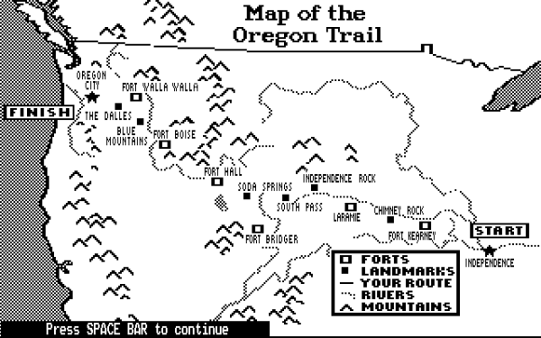
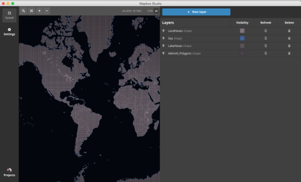
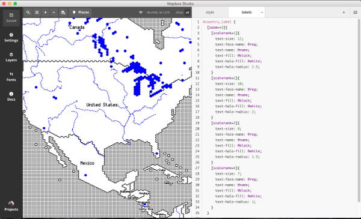
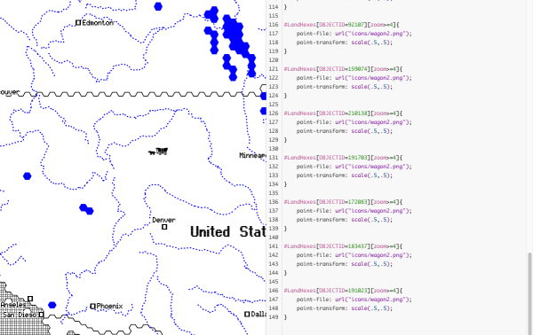
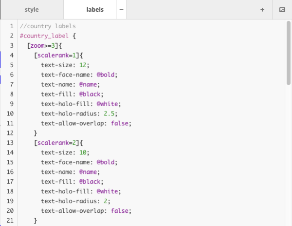
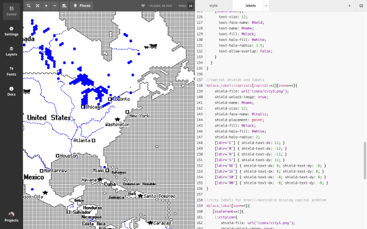

CartoCSS Part Two
For part two of my series in advanced CartoCSS vector tileset design, I’m working on another tileset based off of the classic video game ‘The Oregon Trail’. I’ve always loved the 8-bit style of the map in the game and after seeing a Super Mario tileset by Duncan Graham, I figured this would be my next foray into Mapbox Studio.

This tileset is pretty simple in comparison to my previous set. The simplicity of the background and color scheme make point locations and typeface decisions much more important. As the main point of this map is to be referential, typeface plays a critical role in informing the reader where everything is.
Step One: Download Source
I wanted to do something special, as a nod to the generalized style of maps used in video games. Project Linework is a great vector shapefile source for generalized linework. I’ve always wanted to use Daniel Huffman’s war games shapefile which are a fantastic hexagonal abstraction of the world.
After downloading the source from Project Linework, the shapefile has to be uploaded to Mapbox Studio. Since it’s such a big file at zoom 0, and I plan on constraining the zoom level anyway, so in order to upload it to mapbox and stay under the 500MB limit, I have to constrain it first on the source side.

This seems to have added a gap in my tileset near the IDL, but since this map is meant to be at a zoom level > 3, it’s unlikely that this will be of any concern.
Step Two: Adding Textures & Basic Design
One of the classic features of an 8-bit video game (and of the Oregon Trail maps) is the grid texture used instead of color for water. I found a grid texture and set the water polygon to be that pattern, to mimic it as best as possible.
To add some color, I set my lake hex shapefile to be blue to match the classic bright blue of the sample maps and added a polygon-gamma setting of .2 to have some overlap of the lakes and not have awkward gaps.
With CartoCSS, there’s a lot of zooming in and out to figure out what needs to change at different zoom levels. While the grid texture will adjust at any zoom level, the thickness of the line-widths will look better if they’re adjusted.

Step Three: Having Fun With It
To make this map more fun, I decided to add random wagon icons in places that have a lot of free space (so the USA, Canada, Russia, China, etc.). I took the 8-bit wagon image and made that into a png. Since I’m using project linework, I just picked the placement of the wagons based off of the LandHexes POLYGONID. I used the point-transform function to scale the wagons to fit better. With more time, I might have it change scale with the zoom level.

Step Four: Labelling Isn’t That Scary
This tileset is my first foray into in depth CartoCSS labelling. It can be incredibly frightening when looking at source examples in Mapbox Studio and seeing how point labelling works, but the best part of my experience in Studio is the ability to always test things out.
I wanted to make my labelling more dynamic than last time, adapting to different zoom levels and having country labels scaled to their size and importance. #country_label, a layer built into Mapbox Streets, already has a scalerank built in so I can easily set up what can occur at different zoom levels, so country labels don’t overcrowd.

I did this for each scale rank for zooms 3-5, just to make sure everything is operating dynamically and to also make it easier when I add in cities.
Speaking of cities, it’s about time to add those in.
I wanted to mimic the classic markers used by the Oregon Trail so I made custom pngs to place in the tileset. In Mapbox Studio, when I want to add a point for the city, I have to use the shield documentation kept neatly under the text docs. Adding a city name as a shield makes it easy to position the label and the shield together to fit well. Again, with Mapbox Streets, there’s an assigned ‘ldir’ that sets the label direction, making it easy to fit the shield and the label in the correct position.

Step Five: Enjoy Your Success!
WOW! I finished another tileset. My next couple will be coming out shortly, as always they’re accessible through my website and are hosted on my github if you’re curious to look more in depth. If you’ve been reading these, THANK YOU! The praise I’ve been getting is insane and has dumbfounded me, thanks for giving me inspiration to keep doing more.
If you’re working in CartoCSS and doing cool stuff, let me know! I’ve been building a gallery of amazing tilesets and would love to include yours. If you’ve ever considered doing CartoCSS, YOU CAN DO IT! It’s amazing and fun and I’d love to answer any questions you might have.
← back to blog